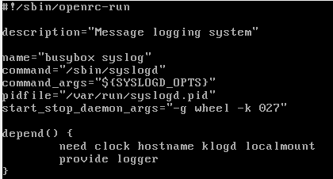

Про Alpine
Чем может очаровать Alpine, особенно после CentOS? Отчаянным минимализмом!
Ну и, конечно, отсутствием необходимости сертификации «Linux Systemd Certified Voldemort».
Что сделали авторы:
- Понизили число используемых базовых компонентов;
- Выбрали модули поменьше и попрозрачнее;
- Упростили процесс конфигурирования системы.
А именно:
- Чрезвычайно лаконичный процесс установки с использованием консольной утилиты setup-alpine;
- В качестве загрузчика взят extlinux из состава проекта syslinux;
- Небольшой инструмент сборки mkinitfs для создания временной файловой системы, используемой при загрузке;
- Система инициализации openrc с определением зависимостей между сервисами, уровнями запуска и щепоткой скриптования;
- Замена стандартной библиотеки GNU libc на более легковесную musl libc;
- Вместо пакета GNU coreutils большинство стандартных системных утилит в несколько урезанном исполнении входят в состав пакета busybox, который может быть Вам знаком по встраиваемым решениям;
- По умолчанию используется командный интерпретатор ash в составе busybox. Само собой, никто не мешает при необходимости поставить bash, ну и systemd;
- Собственный пакетный менеджер apk и собственная инфраструктура распространения пакетов.
Кроме того, авторы реализовали ряд мер, ориентированных на повышение уровня защищенности базовой системы:
- Применили патчи ядра grsecurity/PaX (про их эффективность мнения расходятся, но все же); Уже нет, спасибо коллеге из комментариев. Как раз 26 июня вышла версия 3.8.0.
- Собрали пакеты с использованием режимов, снижающих вероятность эксплуатации ряда возможных уязвимостей.
В итоге мы получаем систему, снабженную рядом дополнительных механизмов защиты, позволяющую решить имеющуюся задачу и занимающую около 130 МБ. В запущенной системе установлен 41 пакет и выполняется 13 пользовательских процессов, можно стучаться по ssh.
И больше ничего. Осталось добавить то, что нужно вам (да и iptables с возможностью восстановления конфигурации при старте поставьте).
Приоткроем крышку
Обратите внимание – Alpine может пригодиться как учебная площадка при ознакомлении с ОС Linux! Увидеть логику работы компонентов субъективно проще, чем пытаться охватить сходу CentOS или Ubuntu:
- Загрузчик нашей установленной системы прост, его конфигурация влезает в 12 строк:
- Да и в /boot не слишком многолюдно:
- А вот и запущенный загрузчик без модных обоев:
- Ядро загружается, подхватывает initramfs, отрабатывает собственные шаги инициализации и вызывает команду init (которая, на самом деле, тоже идет в составе busybox). Init использует файл /etc/inittab:
- И тут в явном виде прописано, что нужно запустить для инициализации системы:
- Запустить 6 процессов getty, ожидающих на 6 виртуальных консолях локального входа пользователя.
- Запустить систему инициализации openrc для поочередного достижения требуемых уровней инициализации (openrc использует не классические уровни инициализации 0-6, а собственные уровни/группы sysinit — boot — default).
Далее состояние системы зависит от конфигурации openrc, а именно:
- Переменных, заданных в файлах каталога /etc/conf.d;
- Скриптов запуска, находящихся в каталоге /etc/init.d;
- Привязки скриптов запуска к «группам инициализации»:
Осталось прочитать скрипты запуска и обработать их с учетом уровней запуска и зависимостей.
Можем на примере syslog (/etc/init.d/syslog) посмотреть, как выглядит скрипт запуска openrc.
Как видите, это не всегда эти ваши нелюбимые "портянки":

Переменные, используемые при выполнении скрипта, определяются в соответствующем файле /etc/conf.d/syslog. В нашем случае, в файле определена переменная SYSLOGD_OPTS="-Z".
Обратите внимание — в скрипте декларативно определены зависимости данного сервиса.
Openrc честно перебирает в заданном порядке скрипты запуска, достигает уровня «default» — и вот она, рабочая система!
Демоны под крышкой
Что же именно скрывается под скриптами запуска openrc? Как ни странно — набор задач и демонов, перечисленных ниже.
- Сначала, на уровне sysinit:
- dmesg — выставляется уровень журналирования для сообщений от ядра;
- devfs — монтируется и настраивается /dev;
- mdev — запускается менеджер устройств;
- hwdrivers — загружаются модули устройств на основе информации из /sys и /dev;
- Следующим идет уровень boot:
- modules — загружаются модули ядра, перечень которых определен в /etc/modules;
- hwclock — настраиваются аппаратные часы реального времени;
- sysctl — задаются параметры ядра, определенные нами в /etc/sysctl.conf;
- swap — подключается swap-раздел;
- bootmisc — очищаются временные каталоги;
- urandom — настраивается генератор случайных чисел;
- keymaps — инициализируется раскладка клавиатуры;
- hostname — задается имя машины, которое определено в /etc/hostname;
- networking — поиск и инициализация интерфейсов с использованием информации из /etc/network/interfaces;
- syslog — запускается демон журналирования из состава busybox;
- И наконец, уровень default:
- chrony — запускается NTP-сервис;
- crond — запускается сервис выполнения задач по расписанию;
- acpid — запускается сервис отслеживания событий питания;
- sshd — запускается сервис удаленного доступа.
Ура, после выполнения этих шагов система готова к работе! Не забудем и про зависимости от перечисленных выше сервисов, которые были заданы в init.d файлах:
- sysfs — монтирование /sys;
- fsck — проверка и исправление файловых систем;
- root — монтирование корневой системы на запись/чтение;
- localmount — монтирование всех файловых систем, перечисленных в /etc/fstab;
- klogd — журналирование событий ядра.
Открываем одну из локальных консолей, где нас поджидает getty, вводим логин, после чего передаем пароль процессу login и получаем доступ к запущенному командному интерпретатору ash (при запуске которого выполняется содержимое файлов /etc/profile, /etc/profile.d/* и ~/.profile для подготовки пользовательского окружения).
Ура, никаких дополнительных сущностей (несомненно, полезных в ряде случаев, вроде PAM) — а мы в системе!
Осталось воспользоваться пакетным менеджером apk, и поискать нужные нам для нашей задачи пакеты. (Есть ли они там? Можно оценить это через веб-портал).
А еще
- Авторы дистрибутива сделали свою собственную надстройку над iptables под названием «Alpine Wall». И она не висит постоянно отдельным процессом в системе;
- Для тех, кто любит управлять сервером через веб-интерфейс, подготовлен пакет «Alpine Configuration Framework». Без PHP или Perl, но с Lua;
- Для тех, кто желает рабочего стола, есть возможность установки графической среды (хотя это может оказаться больно в начале);
- Для особых ценителей имеется «установка» Alpine в памяти с хранением конфигурации на внешнем хранилище (см. описание инструмента lbu).
Итог
Дистрибутив Alpine не идеален, но его лаконичность меня действительно впечатлила, особенно в роли контейнера (всего 6 процессов — init, 4*getty, syslogd). Для меня он выглядит так, как должна выглядеть минимальная серверная операционная система (прости меня, CentOS!).
Кроме того, он вполне подходит на роль учебной площадки, позволяющей увидеть, из чего состоит современный дистрибутив, не погружаясь сразу в пучину whateverd-сервисов и многократного дублирования функциональности в великолепно-многоуровнево-конфигурируемых-средствах на все случаи жизни.